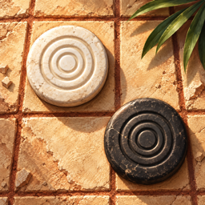

Ludéum EnglishPolítica de privacidad
Última actualización: 10 de octubre de 2026
Lo más importante: Ludéum no recopila, no guarda en servidores propios y no comparte ningún dato personal. No hay cuentas, analíticas, rastreadores ni publicidad.
Datos que se quedan en tu dispositivo
- Tus partidas guardadas, estadísticas, retos, sellos, laureles y ajustes (estilo del tablero, sonido, música, apariencia) se guardan solo en tu iPhone o iPad.
- Puedes borrar tus estadísticas desde el perfil de la app. Si borras la app, se borra todo lo que guardó.
Game Center
Si tienes Game Center activado, Apple gestiona con tu cuenta los logros, las clasificaciones de los torneos semanales y el juego en línea. Ludéum solo usa lo que Game Center le da para jugar: tu apodo y tu foto de Game Center, que ve tu rival. No recibimos tu correo ni ningún otro dato de tu cuenta de Apple. Todo esto se rige por la política de privacidad de Apple.
Juego en línea
Las partidas en línea, en vivo o por turnos, pasan por los servidores de Game Center de Apple. Solo se envían las jugadas y el estado de la partida, y solo a tu rival. Ludéum no tiene servidores propios y no guarda esas partidas fuera de Game Center.
Compras
Si la app ofrece compras dentro de la app, Apple las procesa con tu cuenta del App Store. Ludéum no recibe tus datos de pago; solo sabe si la compra se hizo para desbloquear lo que compraste.
Niñas y niños
Ludéum no recopila datos de nadie, tampoco de menores de edad.
Cambios a esta política
Si la app cambia lo que hace con tus datos, actualizaremos esta página y la fecha de arriba antes de publicar el cambio.
Contacto
¿Tienes dudas sobre tu privacidad? Escríbenos desde la página de soporte.